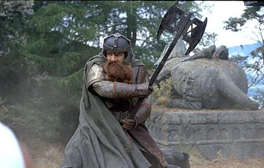

Descripció
El señor dels anells, es una trilogia que consta de "La comunitat de l'anell", "Les dues torres" i "La venjança del rei", es basa en la trilogia de les novel·les de fantasia juvenils de J.R.R.Tolkien, escriptor, poeta, filòleg, lingüista i professor, britànic. Les tres pel·lícules varen ser escrites, produïdes i dirigides per Peter Jackson coescrites per Fran Walsh i Philippa Boyens, distribuïdes per New Line Cinema. "Fa molt de temps, a una hera quan encara, concretament a la Terra Mitja, quan encara convivíem amb elfs i nans, es varen fabricar 20 anells, tres d’ells van ser per pels Reis Elfs sota el cel, set per als Senyors Nans en palaus de pedra, 9 per als Homes Mortals condemnats a morir, i un d’ells va ser fet pel Senyor Obscur “Sauron”, a sobre del tro obscur a la Terra de Mordor a on s’estenen les Ombres. Un Anell per a governar-los a tots. Un Anell per trobar-los, un Anell per atreure'ls a tots i lligar-los a les tenebres a la Terra de Mordor on s'estenen les Ombres." Així comença aquesta historia, i s’apropa a l’inici de l’aventura. Quan la cinta ens porta a Hobbiton, pocs segons després de l’inici, coneixem un jove Frodo Bolson i el seu amic Samsagaz Gamyi, els quals tindran que endinsar-se en un viatge de llarga durada, per portar l’anell del Senyor Obscur a la Muntanya de la Destinació per destruir-lo. Al film veurem com diversos personatjes ajudaran a en Frodo i a en Sam a portar l'anell únic lluitant contra l’exercit de Sauron, com son en Gandalf el mag gris, l'Aragorn fill de l'Arathorn, Legolas l’elf i Gimli el nan, junts donaran forma a aquesta brillant pel·lícula, que ens endinsarà en un mon fantàstic i ple de perills.
Director: Peter Jackson
És un director, guionista i productor de cinema neozelandès, nascut el 31 d'octubre de 1961 a Wellington, capital de Nova Zelanda, Jackson en els seus inicis com a cineasta, té diversos llargmetratges abans de dirigir "El Senyor dels Anells", però fins a 1994 no va començar el seu reconeixement com a director, quan va ser nominat als Oscar com a millor guió amb la pel·lícula Heavenly creatures (Criatures Celestials) i sent aquest premiat al Festival de Venècia com a millor director, després de l'anterior, Jackson va realitzar "La Veritable Història Del Cinema" (Forgotten Silver, 1995), un fals documental sobre les aventures d'un cineasta, i a l'any següent la pel·lícula "The Frighteners" (1996), protagonitzat per Michael J. Fox, en què barrejava comèdia, ciència ficció i thriller. pocs anys després ens mostraria aquesta gran obra, sent una de les millors trilogies cinematogràfiques de l'època.
Personatjes
Frodo Bolson

Frodo Baggins en l'original anglès, Pertany a la raça dels hobbits. És fill de Drogo Bolsón i de Prímula Brandigamo, nebot de Bilbo Bolsón i mig cosí de Merry. Personatje que porta tot el ferro de la pel·lícula, junt el seu amic i defensor Samsagaz, noi valent, amb mental·litat aventurera, com el seu tiet Bilbo.
Samsagaz Gamyi

L'acompnayant inseparable en tota aquesta aventura d'en Frodo, ens donarà moltes lliçons de que es ser més que un amic, encara que tingui algun descens a la cinta, Sam sempre demostrarà la seva lleialtat cap al seu amic.
Gandalf

El que marca el camí, el savi mag que sap el que es fa en tot moment, encara que encara que l'enemic sempre intentarà apartar del seu propòsit, Gandalf sempre té una sàvia estratègia per sortir dels seus malèfics plans.
Aragorn

L'Aragorn, el feréstec misteriós, aquell que la història li ha preparat un final que el sempre es nega a entendre. Aragorn ens ensenyarà com defensar l'honor del bé davant del mal i com lluitar amb el cor i no amb la ràbia.
Legolas

L'elf lluitador, tot i ser una persona de poder dins de la seva raça, sempre està disposat a donar el millor d'ell per defensar la Terra Mitjana. Ens deixarà sorpresos amb el seu art amb l'arc, i serà un personatge que formarà part de la comèdia de la saga.
Gimli
El nan, com Legolas, Gimli forma part d'un alt poder dins la comunitat dels nans. Gran company de viatge, tossut i lluitador, amb un gran ego com a bon nan que és, ens donarà moments que ens faran treure de les escenes més dures de l'film.